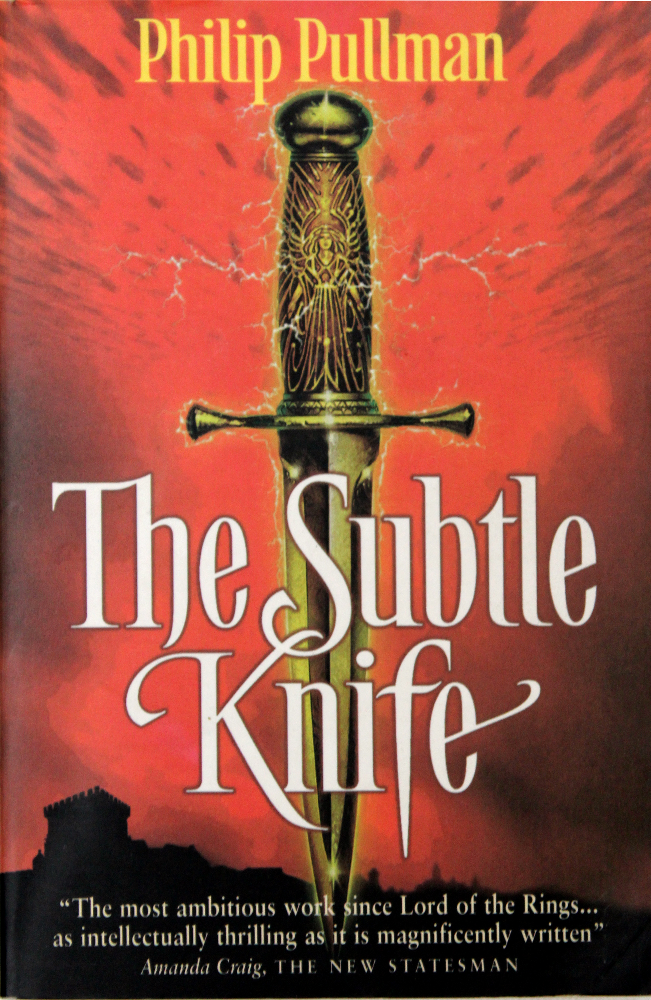
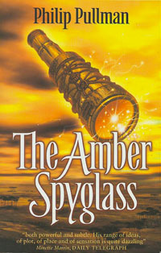

His Dark Materials

Northern Lights

Subtle Knife

Amber Spyglass
The Dark Materials Trilogy was written by Philip Pullman starting with the Northern Lights(1995), then The Subtle Knife(1997) and ending with The Amber Spyglass(2000). The series follows the coming of age of two children, namely Lyra Bellacqua and Will Parry, as they wander through a series of parallel universes.